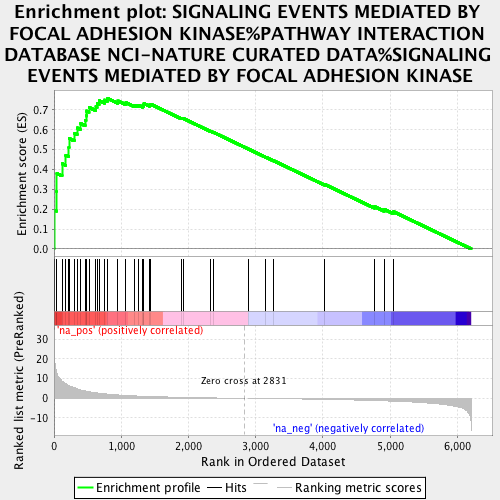
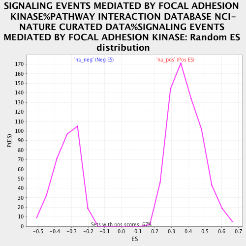

| | | Dataset | brca_hd_tep |
| Phenotype | NoPhenotypeAvailable |
| Upregulated in class | na_pos |
| GeneSet | SIGNALING EVENTS MEDIATED BY FOCAL ADHESION KINASE%PATHWAY INTERACTION DATABASE NCI-NATURE CURATED DATA%SIGNALING EVENTS MEDIATED BY FOCAL ADHESION KINASE |
| Enrichment Score (ES) | 0.7581117 |
| Normalized Enrichment Score (NES) | 1.9748355 |
| Nominal p-value | 0.0 |
| FDR q-value | 0.001811819 |
| FWER p-Value | 0.013 |
Table: GSEA Results Summary

Fig 1: Enrichment plot: SIGNALING EVENTS MEDIATED BY FOCAL ADHESION KINASE%PATHWAY INTERACTION DATABASE NCI-NATURE CURATED DATA%SIGNALING EVENTS MEDIATED BY FOCAL ADHESION KINASE
Profile of the Running ES Score & Positions of GeneSet Members on the Rank Ordered List
| PROBE | GENE SYMBOL | GENE_TITLE | RANK IN GENE LIST | RANK METRIC SCORE | RUNNING ES | CORE ENRICHMENT | | 1 | NCK2 | | | 2 | 27.487 | 0.1952 | Yes |
| 2 | SRC | | | 35 | 13.752 | 0.2879 | Yes |
| 3 | ITGB5 | | | 41 | 13.034 | 0.3798 | Yes |
| 4 | CAPN2 | | | 120 | 8.681 | 0.4289 | Yes |
| 5 | FYN | | | 172 | 7.311 | 0.4726 | Yes |
| 6 | RRAS | | | 219 | 6.477 | 0.5112 | Yes |
| 7 | RAC1 | | | 224 | 6.385 | 0.5560 | Yes |
| 8 | SH3GL1 | | | 303 | 5.345 | 0.5814 | Yes |
| 9 | MAPK1 | | | 345 | 4.844 | 0.6092 | Yes |
| 10 | ACTN1 | | | 393 | 4.182 | 0.6313 | Yes |
| 11 | MAPK9 | | | 464 | 3.676 | 0.6462 | Yes |
| 12 | PIK3CA | | | 476 | 3.605 | 0.6700 | Yes |
| 13 | PTK2 | | | 483 | 3.579 | 0.6945 | Yes |
| 14 | ITGB1 | | | 521 | 3.347 | 0.7123 | Yes |
| 15 | VCL | | | 623 | 2.837 | 0.7161 | Yes |
| 16 | MAP2K1 | | | 641 | 2.724 | 0.7327 | Yes |
| 17 | TLN1 | | | 671 | 2.576 | 0.7464 | Yes |
| 18 | MAP2K4 | | | 751 | 2.285 | 0.7498 | Yes |
| 19 | MAPK8IP3 | | | 794 | 2.122 | 0.7581 | Yes |
| 20 | RAP1A | | | 950 | 1.693 | 0.7450 | No |
| 21 | RAF1 | | | 1068 | 1.457 | 0.7364 | No |
| 22 | ASAP1 | | | 1198 | 1.211 | 0.7241 | No |
| 23 | ROCK2 | | | 1249 | 1.133 | 0.7241 | No |
| 24 | PXN | | | 1317 | 1.034 | 0.7206 | No |
| 25 | ELMO1 | | | 1333 | 1.014 | 0.7254 | No |
| 26 | GRB2 | | | 1337 | 1.010 | 0.7321 | No |
| 27 | RHOA | | | 1423 | 0.899 | 0.7247 | No |
| 28 | BRAF | | | 1439 | 0.880 | 0.7285 | No |
| 29 | RAP1B | | | 1891 | 0.458 | 0.6587 | No |
| 30 | GIT2 | | | 1920 | 0.441 | 0.6573 | No |
| 31 | RAPGEF1 | | | 2323 | 0.191 | 0.5935 | No |
| 32 | ITGA5 | | | 2374 | 0.171 | 0.5866 | No |
| 33 | ARHGEF7 | | | 2896 | -0.000 | 0.5022 | No |
| 34 | PIK3R1 | | | 3146 | -0.098 | 0.4625 | No |
| 35 | SOS1 | | | 3271 | -0.152 | 0.4435 | No |
| 36 | PAK1 | | | 4028 | -0.558 | 0.3249 | No |
| 37 | WASL | | | 4768 | -1.142 | 0.2133 | No |
| 38 | ARHGAP26 | | | 4914 | -1.305 | 0.1991 | No |
| 39 | RASA1 | | | 5054 | -1.477 | 0.1870 | No |
Table: GSEA details [plain text format]

Fig 2: SIGNALING EVENTS MEDIATED BY FOCAL ADHESION KINASE%PATHWAY INTERACTION DATABASE NCI-NATURE CURATED DATA%SIGNALING EVENTS MEDIATED BY FOCAL ADHESION KINASE: Random ES distribution
Gene set null distribution of ES for SIGNALING EVENTS MEDIATED BY FOCAL ADHESION KINASE%PATHWAY INTERACTION DATABASE NCI-NATURE CURATED DATA%SIGNALING EVENTS MEDIATED BY FOCAL ADHESION KINASE